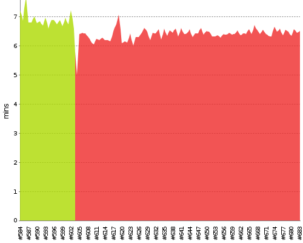

Skip to content
log in
DISABLE AUTO REFRESH
Jenkins
All
P_Aegir_Puppet_Module_functional_test_Aegir2-dev
Back to Dashboard
Status
Changes
trend
W
Description
%
Build stability: All recent builds failed.
0
Build History
x
#683
May 14, 2016 7:43 PM
#682
May 13, 2016 7:43 PM
#681
May 12, 2016 7:43 PM
#680
May 11, 2016 7:43 PM
#679
May 10, 2016 7:43 PM
#678
May 9, 2016 7:43 PM
#677
May 8, 2016 7:43 PM
#676
May 7, 2016 7:43 PM
#675
May 6, 2016 7:43 PM
#674
May 5, 2016 7:43 PM
#673
May 4, 2016 7:43 PM
#672
May 3, 2016 7:43 PM
#671
May 2, 2016 7:43 PM
#670
May 1, 2016 7:43 PM
#669
Apr 30, 2016 7:43 PM
#668
Apr 29, 2016 7:43 PM
#667
Apr 28, 2016 7:43 PM
#666
Apr 27, 2016 7:43 PM
#665
Apr 26, 2016 7:43 PM
#664
Apr 25, 2016 7:43 PM
#663
Apr 24, 2016 7:43 PM
#662
Apr 23, 2016 7:43 PM
#661
Apr 22, 2016 7:43 PM
#660
Apr 21, 2016 7:43 PM
#659
Apr 20, 2016 7:43 PM
#658
Apr 19, 2016 7:43 PM
#657
Apr 18, 2016 7:43 PM
#656
Apr 17, 2016 7:43 PM
#655
Apr 16, 2016 7:43 PM
#654
Apr 15, 2016 7:43 PM
Timeline
Build Time Trend

Build
Duration